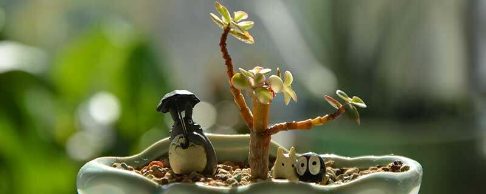

{{item.read}}
睡莲花的花语有不懈努力、高高在上、纯真和朝气蓬勃。睡莲长期生长于池塘的淤泥中，经过长期的生长，花朵才能浮在水面上。睡莲花还寓意着纯真纯洁，适宜送给心灵纯洁的朋友。睡莲也寓意着朝气蓬勃，可将睡莲花送给积极向上的朋友，表达对对方的赞美。各个花色的睡莲也有不同的花语，粉色睡莲的花语是朝气蓬勃，红色睡莲的花语是洁净、纯真。白色睡莲的花语是纯洁、不谙世事。蓝色睡莲花的花语是永恒等待和梦中的恋人。
睡莲花的寓意
睡莲花寓意着不懈努力，睡莲花长期生长在池塘底部的于立中，经过长期的生长，花枝才能够长出水面，并且植株需经过炎夏和烈日才能开花，象征着有顽强意志的人。
睡莲花还寓意着纯真纯洁。在古诗文中，有出淤泥而不染，濯清涟而不妖的描述，并且睡莲花色主要呈粉色或纯白色，给人一种纯洁无瑕的感觉，适合赠送给心灵纯洁的朋友。睡莲花寓意着朝气蓬勃，睡莲花的花苞较为饱满，花朵较为盛大，并且花朵朝着阳光生长，看上去十分积极向上。将睡莲花送给朝气蓬勃的朋友，可表达出对他的肯定与赞美。
蓝玫瑰有独一无二的花语，可将蓝玫瑰送给自己喜欢的人，表达你是我心中独一无二的存在，我只会爱你一个人，不会再去爱其他人。蓝玫瑰还有无尽祝福的花语，送给他人代表着希望对方一切顺利。蓝玫瑰寓意着热情与爱情，送给爱人蓝玫瑰可以表达对对方的爱，也可送给闺蜜或是朋友，寓意着珍贵的友谊。
蓝玫瑰的花语中还代表着无尽的祝福。不管在亲情、友情还是爱情之中，彼此的感情交织在一起。到了分别的时候送一束蓝玫瑰花，则代表着希望对方一切顺利，能生活的更加轻松与快乐。
蓝玫瑰的寓意
蓝玫瑰寓意着热情、爱慕，也可寓意着深爱的意思，一般送给喜欢的人2～3朵蓝玫瑰，就可很好的传达对方的爱意，同时也能很好的表示对对方的诚心。
蓝玫瑰也有珍贵的寓意，一般蓝玫瑰可以送给朋友或者闺蜜，具有珍贵友谊的意思，也可以寓希望彼此之间的友谊能够长久。
乙女心有着活泼青春的花语，株型优美，叶片排列紧凑，而且肥厚有光泽，颜色从翠绿到粉红不等，看起来十分美丽粉嫩，好似一位缓缓走来的青春靓丽的少女，可以将其送给最爱的女孩，祝愿她永远青春美丽。
乙女心株型优美，叶片颜色从翠绿到粉红不等，好似一位青春靓丽的少女，有着活泼青春的花语。也可以说是一位面颊粉嫩的青春少女，也有可爱少女的花语。乙女心在比较艰苦的环境中也能存活，有着顽强坚韧的花语，养护过程中需保证光照充足，以免植株徒长。
乙女心也有着可爱少女的花语，乙女在日语中就有少女的意思，而且其颜色粉嫩，光照越充足，叶片就会逐渐变为粉红色，好似一位面颊粉嫩的青春少女，可以将它送给自己的挚友，夸赞其活泼可爱。
乙女心类多肉植物的生命力比较旺盛，极易成活，对于栽培基质的要求不高，在比较艰苦的环境中也能存活。这给人一种坚忍不拔的感觉，好似它永远拼搏向上，有着顽强坚韧的花语，可以将它送给处于低谷期的朋友，以资鼓励。
乙女心的养护要点
乙女心在养护过程中需要充足的光照，在光照柔和的春秋冬季尽可能多让植株晒太阳，以免植株发育不良。茎秆越长越长，叶片萎缩瘦小，也很难呈现诱人的粉色，建议将花盆摆放在光线明亮的地方，让其接受自然光照。
卷丹百合有着百年好合、温馨温暖、家庭幸福的花语，因为其花名与百年好合的百合二字重合。爱人百年好合其家庭自然美满，所以卷丹百合也有着家庭美满的花语意思。传说女子为救恋人化作了卷丹百合，有位辛勤的园丁也因细心照料花朵而被上天奖赏，还有着伟大的爱、深深祝福的花语。
1、 百年好合
卷丹百合有着百年好合的花语，其花名中有百合二字，百年好合这个成语中也有百合二者，所以人们就给予百合花百年好合的花语意思。可以将卷丹百合作为新婚礼物，希望二人百年好合，感情长长久久。
2、 家庭美满
卷丹百合也有着家庭美满的花语，每个家庭都是由爱人组成的，如果爱人可以百年好合，那么这个家庭肯定是美满的。可以将卷丹百合送给亲朋好友，希望他们家庭美满，也可以在自己的家里摆上一盆。
3、 伟大的爱
卷丹百合是一种十分美丽的花朵，传说有一个女子为了救自己的恋人向天祈祷。最后恋人活了过来，但女子却变成了卷丹百合，所以卷丹百合有着伟大的爱的花语意思。恋人之间可以互赠此花，以表达自己的爱意。
4、 深深祝福
传说中有一位辛勤的园丁，他细心呵护每一朵卷丹百合。最后园丁爱上了卷丹百合。而且上天为了奖励园丁对花朵无微不至的照料，将卷丹百合变作一个女子，所以卷丹百合还有着深深祝福的花语意思。
默默生长的就像是一个默默爱着别人的人，有着沉默的爱的花语意思。雅乐之舞是一种默默生长的多肉植物，就像是一个默默爱着别人的人，从来不会诉说自己的心意，只是默默地陪伴着他(她)。希望有一天对方可以理解自己的心意，懂得自己的情意，所以它有着沉默的爱的花语意思。
可以将它送给自己一直默默喜欢的人，期待对方能够明白自己的心意。雅乐之舞寓意着热烈与光明，颜色明快，散发着勃勃生机，不常开花的雅乐之舞一旦开花也寓意着好运降临。
因为有这一层花语意思，雅乐之舞是非常适用于表白的，可以将它送给自己一直默默喜欢的人，以此表达自己沉默无言的爱。送上一盆雅乐之舞是期待对方能够明白自己的心意，懂得那从未诉之于口的爱。
雅乐之舞寓意着热烈与光明，远远望去雅乐之舞的颜色非常明快的，给人一种勃勃生机，蕴含着光明与希望，代表了一种美好的生活追求。如果身边有热爱生活，追求光明的文艺青年朋友，可以送上一盆雅乐之舞。
雅乐之舞也寓意着好运降临，雅乐之舞是不常开花的，一旦雅乐之舞开花就意味着有好运降临。可以将开出淡粉色小花的雅乐之舞送给朋友或者家人，希望对方可以乐观的面对生活，不久就会有好运降临，表达自己的祝福。
百合花花语是百年好合，正如同它的名字一样，代表着婚姻幸福、家庭美满的意思，纯白色的花色透露着一种高雅、端庄的品质，也寄托着人们对美好生活的祝愿，非常适合赠送给家人和朋友，代表着自己满满的祝福。
百合花的花语是百年好合，代表着婚姻幸福、家庭美满的祝福，适合赠送给亲人和朋友。百合花寓意着吉祥如意，表达了人们对美好生活的追求，以及对幸运到来的期望。百合花的花瓣呈椭圆形，花色为桔红色，叶片呈披针形，表面没有绒毛。
百合花寓意着吉祥如意，那繁密的花朵夹杂着芬芳，让人不禁感叹大自然的奇妙，典雅大方的花形，格外吸引人们的眼球，也能够表达人们希望幸运、美好早日到来，能够过上舒服、快乐的日子，生命力非常顽强，容易种植。

百合花的介绍
百合花属于多年生草本球根植物，鳞片的形状为披针形、宽卵形，长度为4～7厘米，宽度为5～8厘米，颜色为白色，茎干直立生长，长度为1.2～1.5米，宽度为0.8～1.2厘米，颜色为深紫色，表面具有斑纹。
叶片的形状为披针形，长度为3～15厘米，宽度为0.5～1.5厘米，顶端呈椭圆形，表面没有绒毛。花序的形状为总状圆锥形，花瓣的形状为椭圆形，会外卷曲生长，长度为8厘米，宽度为1.5厘米，花色为桔红色、白色，还带有紫黑色的斑点。
莺歌凤梨花语意思是保持完美，可通过赠送此花表达对一个人的赞美的钦佩。莺歌凤梨花朵硕大鲜红，还有吉祥如意的花语，可增添喜庆氛围。其花的寓意是鸿运当头、好运来临，可将其送给做生意的朋友或是处于低谷期的朋友，希望可以为他们带来好运。

莺歌凤梨花语
莺歌凤梨有着保持完美的花语，可通过赠送莺歌凤梨花来表达对一个人的赞美的钦佩，表明对方在自己心中的地位非常崇高，只能看到对方美好的一面，是完美无缺的存在。也可以在自己房中摆一盆莺歌凤梨，以此作为学习目标。
莺歌凤梨也有着吉祥如意的花语，莺歌凤梨花的花朵硕大，直立顶生，花色鲜红，代表吉祥如意。在元旦、春节等非常喜庆的日子里可以送上一束莺歌凤梨，以此表达自己诚挚的祝福，希望对方生活幸福美满，心想事成。
莺歌凤梨寓意
莺歌凤梨寓意着鸿运当头，因为其花朵硕大鲜红，也可以表示鸿运当头。所以生意场上的商人都会在家中或者办公室摆上一盆莺歌凤梨，希望自己可以财运亨通、事业顺利、步步高升，也可以作为开业礼物送给亲友。
莺歌凤梨也寓意着好运来临，可以将其送给处于低谷期的朋友，借以加油打气，希望对方可以快点振作起来，尽快走出低谷达到成功的彼岸。若是朋友最近有非常重要的考试、面试等，也可以送上一束莺歌凤梨，希望可以带来好运。
红色蜡花即红色澳梅花，因为其最早生长在澳洲，它的花语是爱情忠贞不渝。澳梅花将花苞摘下来之后是可以保存很长时间的，就像两个人的感情一直不变，可以将澳梅花送给爱人，借此表达自己对感情的忠贞。
红色蜡花即红色澳梅花，可以储存很长时间，它的花语是爱情忠贞不渝。红色腊花可水培养护，先深水醒花，最好将花头以下都泡在水中。接着去除花枝上多余的叶子，枝条长度参考花瓶高度，还要倒入适量的水，需打花枝，花瓶要远离出风口，避免太阳直射。
红色腊花养护方法
红色腊花可水培养护，拿到鲜花之后第一步就是要用深水醒花。先在枝条底部斜剪几厘米，然后将花枝放在醒花桶中，最好将花头以下都泡在水中，浸泡时间不得低于5小时，确保花枝可以吸收充足的水分。
接下来是打理枝叶，醒花之后需要去除花枝上多余的叶子，方便后续插花。枝条长度以花瓶高度为参考，通常花头顶端距离瓶口20-30厘米，瓶口之下的叶子要清理干净，否则叶子浸泡在水中会影响水质。
还要倒入适量的水，可用纯净水搭配可利鲜，约占花瓶容积的三分之一。准备工作做完后即可插瓶，需要将花枝打散，保证花花之间有足够的呼吸空间，也可以保持美观的造型。花瓶要远离出风口，避免太阳直射。
五瓣花的花语有青春常在，富有活力。五瓣花的花期较长，给人一种朝气蓬勃的感觉，所以有青春常在的花语。很适合将五瓣花送给即将毕业的学生，表示对他们青春常在，朝气蓬勃，前程似锦的祝福。
五瓣花的花语有青春常在，富有活力和乐观向上，积极进取，五瓣花还有不怕困难，坚强勇敢的寓意。五瓣花适合送给即将毕业的学生，表示希望他们青春常在，朝气蓬勃，祝愿他们前程似锦，将来面对困难时能保持乐观。
五瓣花的花语还有乐观向上，积极进取。五瓣花抗逆性强，耐干旱和虫害，而且花色鲜艳、生长迅速，让人感觉十分积极乐观。可以将五瓣花送给朋友，表示对他们乐观积极、进取向上态度的赞美。
五瓣花有着坚强勇敢的的寓意，象征着坚强的高尚品格。可以将五瓣花送给生活中并不如意的人，表达希望他能勇敢坚强，保持乐观的态度，面对困难坚韧不屈，在生活中可以克服一切困难。
养护五瓣花的注意事项
五瓣花养护时需要勤浇水，一般来说，每周最少要浇三次水，如果天气炎热30℃以上，则需要一天一浇水保证土壤湿润，日常施肥每周使用10ml的1000倍“花多多”通用肥1次，每天需要保证有6小时光照。
3朵洋桔梗花语是纯真的爱、永恒的爱和永世不忘的爱。洋桔梗有纯真的爱和永恒的爱的花语。洋桔梗代表着真诚、无邪和坚定不移、富有感情、我与你的爱生生世世不变，洋桔梗花色常见有洁白色，像百合一样典雅，而且花形精致，像玫瑰一样美丽。
洋桔梗花色淡雅，花形精致，其梗的部分十分结实，还是一种多年生花卉，非常适合送给爱人和母亲。民间传说洋桔梗花是由一位痴情的女子等待她的爱人等了很久，最后变化而成的。
洋桔梗还有永世不忘的爱的花语。洋桔梗代表着牢记承诺、重视情感，洋桔梗是一种多年生的花卉，种植一次之后可以多年开花而且洋桔梗本身的梗非常结实并且因此得名。
洋桔梗的花语离不开一个爱字，是一种很好的表达爱的礼品。送爱人时，可以选择红色和白色的，表达自己的真诚。洋桔梗也可以送给自己的母亲，代表对母亲的感恩和爱。
洋桔梗的传说
民间传说在很久以前，桔梗是一位姑娘的名字，桔梗与一位少年约好了长大结婚，几年之后，长大了的少年出海打鱼，桔梗就在海边等待，十几年过去了，少年也没有回来。很久之后，桔梗变成了花，向着大海开放。后来，人们发现了这朵花，称这朵花为洋桔梗。
高洁优雅，铁线莲的花语为高洁优雅，可将铁线莲送给心爱的女生，表达出对她优雅气质的欣赏;宽恕原谅，铁线莲还有着宽恕与原谅的花语，可送给他人，表达自己的一种歉意。
1、高洁优雅
紫色铁线莲的花语为高洁优雅，从远处望去紫色铁线莲好似清洁单纯的少女，可让人感受到铁线莲高洁优雅的气质，可将铁线莲送给心爱的女生，表达出自己对她优雅气质的一种欣赏与爱慕。
2、宽恕与原谅
铁线莲的花语为宽恕原谅，铁线莲在开花时花朵单生玉叶腋处，花梗较长，具有较高的观赏价值。可在犯错时，送给别人表达自己的歉意，希望能够得到对方的宽恕与原谅。
3、铁线莲的介绍
铁线莲属于毛莨科的植物，常常被当做盆栽种植，花期在每年6～9月，开花之时花香较为浓郁，具有较高的观赏价值。可将铁线莲养殖在庭院中，起到净化空气和美化环境的作用。
铁线莲的养护方法
养殖铁线莲时，可将椰糠土、泥炭土、珍珠岩混合制作成栽培的基质。在铁线莲生长期间需每隔2～3天浇一次水，使盆土处于微微湿润的状态。在铁线莲生长期间，还需每隔半个月施加一次稀薄的氮肥来补充营养。
99朵粉玫瑰的花语是希望相爱的人能长长久久在一起。99朵粉玫瑰寓意着对爱情的真挚不渝，两个人的感情幸福久久。粉玫瑰代表甜蜜、铭记于心和激情的爱，比起耀眼的红玫瑰，粉玫瑰是含蓄和温暖的。粉玫瑰适合送给喜欢的人，表示对方是初恋。粉玫瑰送给爱人，表示两人之间甜蜜而美好的爱情。
粉玫瑰是直立灌木，高可达2米；茎粗壮，丛生；小枝密被绒毛，并有针刺和腺毛，有直立或弯曲、淡黄色的皮刺，皮刺外被绒毛。小叶5-9，连叶柄长5-13厘米；小叶片椭圆形或椭圆状倒卵形，长1.5-4.5厘米，宽1-2.5厘米，先端急尖或圆钝，基部圆形或宽楔形，边缘有尖锐锯齿，上面深绿色，无毛，叶脉下陷，有褶皱，下面灰绿色，中脉突起，网脉明显，密被绒毛和腺毛，有时腺毛不明显；叶柄和叶轴密被绒毛和腺毛；托叶大部贴生于叶柄，离生部分卵形，边缘有带腺锯齿，下面被绒毛。
粉玫瑰花单生于叶腋，或数朵簇生，苞片卵形，边缘有腺毛，外被绒毛；花梗长5-22.5毫米，密被绒毛和腺毛；花直径4-5.5厘米；萼片卵状披针形，先端尾状渐尖，常有羽状裂片而扩展成叶状，上面有稀疏柔毛，下面密被柔毛和腺毛；花瓣倒卵形，重瓣至半重瓣，芳香，紫红色至白色；花柱离生，被毛，稍伸出萼筒口外，比雄蕊短很多。
粉玫瑰果扁球形，直径2-2.5厘米，砖红色，肉质，平滑，萼片宿存。花期5-6月，果期8-9月。
黄菊花的花语是思念、清净，黄菊花代表对亲友的思念之情，也代表对已故之人的沉痛哀悼。它还代表与世无争、清净隐逸的高尚品质。在欧洲，菊花栽种得最多之处是墓地，欧洲的传统文化认为菊花是墓地之花。中国古代是以菊花祝福或赞赏活者；而今则是用其悼念故人。黄色的花也能表示哀挽，其中黄菊花的使用最为普遍。
菊花在中国的花木文化中的地位颇重。早在东周，即有“九月荣菊”的记载，而屈原是以菊自比第一人，他在离骚中挥墨，形容自己“夕餐秋菊之落英”，且“宁可抱香枝上老，不随黄叶舞东风”。-9，连叶柄长5-13厘米；小叶片椭圆形或椭圆状倒卵形，长1.5-4.5厘米，宽1-2.5厘米，先端急尖或圆钝，基部圆形或宽楔形，边缘有尖锐锯齿，上面深绿色，无毛，叶脉下陷，有褶皱，下面灰绿色，中脉突起，网脉明显，密被绒毛和腺毛，有时腺毛不明显；叶柄和叶轴密被绒毛和腺毛；托叶大部贴生于叶柄，离生部分卵形，边缘有带腺锯齿，下面被绒毛。

真正菊文化的创始人是晋代陶渊明，这位“菊友”与菊花朝夕相伴以至于住处也“秋菊盈园”，他得菊境之深，古往今来无人能及。-22.5毫米，密被绒毛和腺毛；花直径4-5.5厘米；萼片卵状披针形，先端尾状渐尖，常有羽状裂片而扩展成叶状，上面有稀疏柔毛，下面密被柔毛和腺毛；花瓣倒卵形，重瓣至半重瓣，芳香，紫红色至白色；花柱离生，被毛，稍伸出萼筒口外，比雄蕊短很多。
中国传统的清明节,为表达对春天万物复苏、生命循环的美好期待；菊花因其素雅的香味和素净的颜色备受大众青睐。-2.5厘米，砖红色，肉质，平滑，萼片宿存。花期5-6月，果期8-9月。